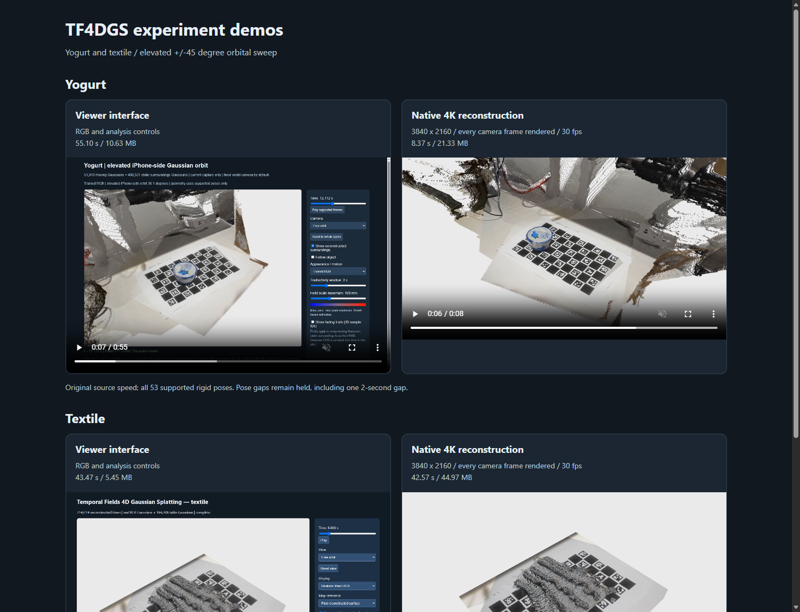

STAGE 39 · failed attempt retained; browser visibility diagnosed · 2026-10-08T23:35:35.5081753Z
Background-browser playback check failed
The first native-video browser sample showed dropped presentation callbacks. Subsequent checks and screenshot paint waits timed out while the dedicated browser was hidden/occluded. The retained actual failed page state reports document_hidden=true for all players and zero presentation callbacks. This does not indicate missing frames in the saved MP4: full-file decoding and timestamps already pass. Restore the browser to the foreground and scroll each player into view before checking presentation.

Genuine local browser screenshot taken after the failed test; metadata retains the prior hidden-page playback results